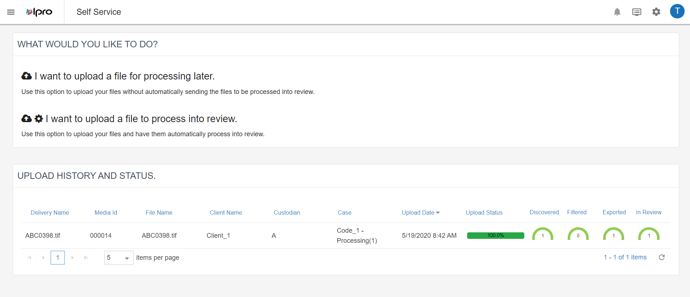
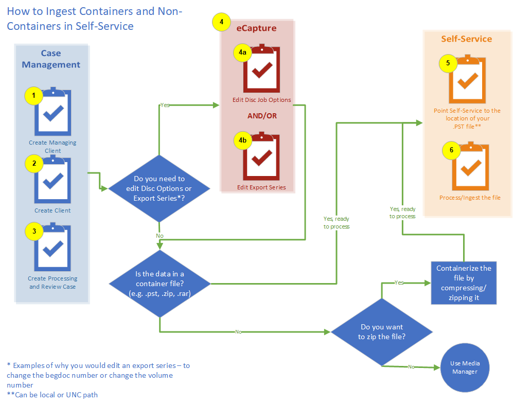
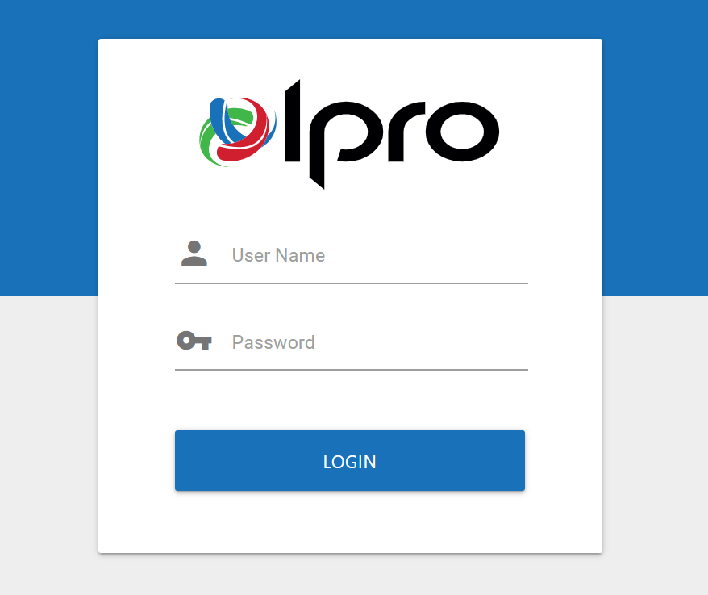

The Self-Service module, part of the

Self-Service allows you to upload files over a secured network from anywhere. Users that are external to your organization have the ability to upload documents into your Media Manager for processing. Files that are uploaded through Self-Service can be monitored in Media Manager.
Files that are uploaded through Self-Service can be monitored in Media Manager. To preserve data integrity, particularly document dates, it is strongly recommended that only archives be uploaded. For example: file archives (such as .ZIP files), mail archives (such as .PST files), or forensic image files (such as .E01 files).
To preserve data integrity, particularly document dates, only archive/container type files can be uploaded. An error will occur if you attempt to import a file that is not in an archive/container format. For example:
File archives (such as .ZIP files)
Mail archives (such as .PST files)
Forensic image files (such as .E01 files)
Self-Service is accessed through the
The following diagram provides an overview of how to ingest data using Self-

Before logging in, you will need to obtain the URL and user credentials defined for Self-Service (or Media Manager), along with any additional instructions from your Media Manager administrator.
To log in to Self-Service:
